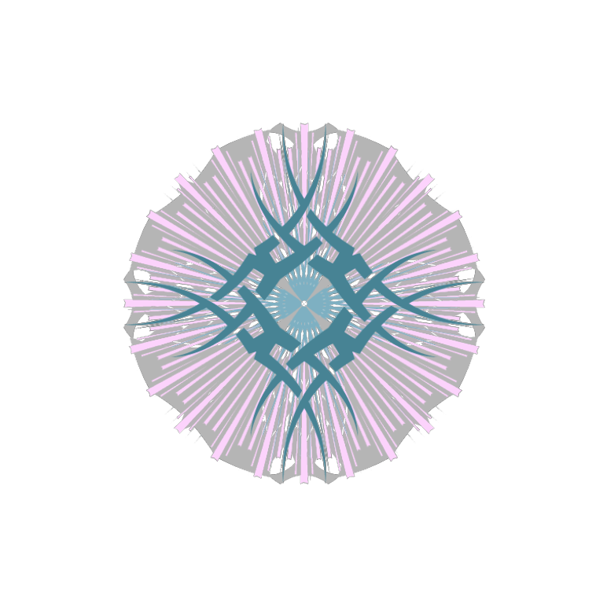

[个人纹章]
草 好中二的感觉
纹章制作器：Rockstar Socialclub Custom Emblem
没想到吧咕嘿嘿
本文编辑日期:2020/04/13_18:00
↳嗯？为什么页面标记的日期是2090年？因为这样是最简单的置顶方法啊！
cn.源帧 (2003.09.20) ⚥
also 酒見 府域 o Feiron Iguista
挽歌/元贞/[屑]法棍 随意称呼
现在是在尽力为Corona Studio作西语翻译(实弱)
来Corona Studio一起学习吧！
[https://craftmine.fun/corona-studio%e6%8b%9b%e5%8b%9f/]:
计划学习Esperanto/Français/Swift/Java/日本語
↳霓虹狗？无限延期！
这个人是…
果粉 | 米粉 | AMD YES | 屑佬 | 垃圾佬 | 文科生 | 姐控 | 抽象带师 | 嘤嘤怪 | 茄语四级
↳e.g. 嘤嘤嘤有没有可爱的小姐姐陪👴玩啊wdnmd
这个人喜欢…
RWBY | 变成那个她 | 黑之契约者 | 3年E班
WD | AC | MC
Minecraft ID：
Java：francoisifrig
BE[also Xbox]：FrigAuraAero
这个人不喜欢…
南朝鲜的较大部分的东西 (三星？有时候应该不算吧awa)
↳毕竟目前菊花厂等还在科研攻关 等到反垄断了就不一样了 咕嘿嘿
新浪
↳恶臭[贬义]
字节跳动
↳无聊 倘若最近的操作能帮罗老师早日摘下老赖的帽子，那也还行。
这个人目前的状态…
现代2D重工业(银铜铝金 吔)
Swift门都还没入(门在哪 吔)
入门摄手[配置d7200+广角镜头]辣鸡！(小姐姐让我摄一摄吧！同城不要钱 咕嘿嘿)
渴求硬件升级(9600kf真香 吸溜)
接近破產…
[所以如果见到我在營業的话…]
[我还算可爱，请看着给点！]
如何与这个人开始对话…
酷安@DecemberTech
GP 不常用个人邮箱 liupiliupi.lihailihai.666@gmail.com(佩服三连)
微软邮箱 cheunghast@outlook.com[Azure同号]
常用正式 frigeso@icloud.com
蠢鹅 1923047105
bili feironiguista
uplay iguista
Steam Coolapk_d’Aura
Xbox FrigAuraAero
FB TWI INS WHATSAPP G+暂时停用。
由于对新浪微博的厌恶，无微博联系方式。
请看着给点.tiff
由于没什么拿得出手的作品，就不拿碗出来了awa
使用 Typora 编辑